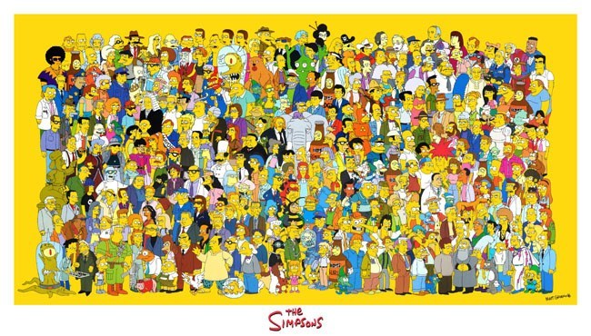

Os Simpsons
Para o mundo17/12
1989Esta comédia animada de enorme sucesso gira em torno da família de mesmo nome que mora na cidade de Springfield, em um estado americano sem nome.

Os Simpsons tem seu elenco com vários personagens e várias aparições de pessoas famosas.
Essa familia ficou muito famosa e querida no mundo inteiro contando com 32 temporadas, 639 epsódios
Em seus 639 episódios já exibidos de “Os Simpsons”, foram centenas de participações especiais de astros da música, do cinema, da TV, políticos, empresários poderosos etc.
"Tenho três filhos e nenhum dinheiro...por que não posso ter nenhum filho e três dinheiros"
Homer Simpsons
- Estreiou: 17-12-1989
- Criador: Matt Groening
- Temporadas: 32
- Epsódios: 639
- Prêmios: muitooooos
- Personagens famosos: George Harrison,Ramones, Elizabeth II, etc...
Quinze anos e mais de 300 episódios depois, a série animada mais duradoura da história já faturou 18 prêmios Emmy, o mais concorrido da televisão americana, e foi aclamado como o melhor programa de TV no século 20, segundo a revista americana Time, em 1999.
O mais incrível é que esse império animado nasceu com um pedaço de papel rabiscado em apenas 15 minutos. Em 1985, o produtor de TV James L. Brooks pediu ao cartunista Matt Groening que criasse uma familia maluca e engraçada para a TV. Na sala de espera, enquanto aguardava pela conversa, Groening rascunhou Homer, Marge, Bart, Lisa e Maggie e mostrou o desenho a Brooks. Ele curtiu: dois anos depois, em 1987, os Simpsons estreavam em vinhetas de três minutos num programa humorístico da Fox.